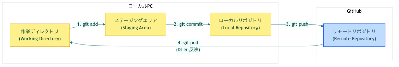

チームで開発を行う際、必ず直面する問題があります。
これを根本から解決するのが 「バージョン管理システム」 です。
Gitは、ファイルに対する全ての変更履歴を記録し、いつでも過去の状態に戻せるようにする仕組み（ツール）です。
GitHubは、Gitで管理している変更履歴のデータをインターネット上で共有・保存できる**「クラウドサービス」**です。
Gitの作業は、大きく「ローカル（自分のPC）」と「リモート（GitHub）」での通信に分かれます。まずは全体の流れを図解で理解しましょう。

ここからは実際にターミナル（WindowsならPowerShell/WSL、MacならTerminal）を開いて操作します。
まだPCにGitが入っていない場合は、以下の手順でインストールします。
xcode-select --install と入力し、案内画面に従ってインストールします（または 公式サイト からインストーラーを利用）。Web 開発（特に React など）には Node.js という実行環境が必須です。 公式サイトから推奨版（LTS）をダウンロードしてインストールしましょう。
無事にインストールが終わったら、ターミナルで以下のコマンドを打ってみましょう。
git --version
node -v
それぞれバージョン番号が表示されれば準備完了です！
チーム開発において、「誰がその変更をしたか」を記録するために、最初に一度だけ情報を登録します。
### 自分の名前に置き換えて実行
git config --global user.name "Your Name"
### 自分のメールアドレスに置き換えて実行
git config --global user.email "your.email@example.com"
※これはPC全体の設定になります。
まずはクラウド（GitHub）のことは忘れましょう。 自分のパソコンの中だけで「セーブデータ」を作ってみます。
mkdir git-practice
cd git-practice
git init (Gitの管理を開始)このフォルダを「Gitで履歴を管理する箱（レポジトリ）」に進化させます。
git init
Initialized empty Git repository in ... と表示されれば成功です！ これでこのフォルダは、ただのフォルダから魔法のフォルダになりました。
テキストファイルを作って、何か書き込んでみましょう。
echo "Hello Git!" > hello.txt
現在のGitの状態を確認する魔法のコマンド git status を打ってみます。
git status
赤字で hello.txt （まだGitが追跡していないファイル）が表示されます。
git add（箱詰め・ステージング）ファイルの変更を行ったら、まずは 「どの変更を次回のセーブデータに含めるか」 を選びます。
### hello.txt をセーブ対象として選ぶ
git add hello.txt
### (参考) フォルダ内のすべての変更をまとめて選ぶ場合は `git add .`
もう一度 git status を打つと、hello.txt が緑色（セーブ準備完了）になっているはずです！
git commit（セーブの確定）箱に荷物を詰め終わったら、「どんな変更をしたか」わかるメッセージ（ラベル）を貼って封印します。これが1つの「セーブデータ」です。
git commit -m "初めてのコミット：挨拶を追加"
これでローカル（自分のPC）に歴史が1ページ刻まれました！
git logちゃんとセーブデータが作られたか、過去の歴史を振り返ってみましょう。
git log
先ほど設定した「あなたの名前」と、「初めてのコミット：挨拶を追加」というメッセージ、そして英数字の羅列（コミットID）が表示されていれば完璧です！（終了するには q キーを押します）
今のままではデータは自分のPCの中にしかありません。 これをGitHubにアップロード（共有）してみましょう！
+ ボタンから 「New repository」 を選択。git-practice と入力。GitHubが「これを自分のPCで実行してね」と教えてくれるコマンドをコピペして実行します。
### メインのブランチ名を "main" に統一する（最近の標準です）
git branch -M main
### 先ほど作ったGitHubの空倉庫(_あなたのユーザー名_)を "origin" という名前で登録
git remote add origin https://github.com/あなたのユーザー名/git-practice.git
これで、手元のPCとGitHubが一本の線で繋がりました。
git push（クラウドへアップロード）いよいよ手元のセーブデータをクラウドに送信します！
### "origin" (GitHub) の "main" ブランチへデータを送る！
### (-u は次回以降 git push だけで送れるようにする便利オプション)
git push -u origin main
ブラウザで先ほどのGitHubのページをリロード（F5）してみてください！ あなたが書いた hello.txt が表示されているはずです！🎉
チーム開発では、「他の人がGitHubに反映した最新の変更」を自分のPCに取り込む作業が頻繁に発生します。
hello.txt をクリックし、鉛筆アイコン(Edit)を押します。This is from GitHub! と追記します。※これで、「クラウド上の方が、手元のPCより進んでいる状態」になりました。
git pull（最新版のダウンロード）あなたの手元のPCは、まだ2行目が追加されていない古い状態です。 GitHubから最新の歴史をダウンロード（同期）しましょう！
git pull origin main
ファイルの中身を確認してみましょう。
cat hello.txt
クラウドでの変更が手元に反映されていれば成功です！
コマンド | やること（意味） | タイミング |
| GitHubの倉庫をPCに丸ごとコピー | プロジェクト参加時(初回のみ) |
| クラウドの最新変更を手元に反映 | 作業を始める前に必ず実行 |
| 現在の変更状況を確認 | 迷ったらとりあえず打つ |
| 変更したファイルをセーブ対象に選ぶ | 作業が一区切りした時 |
| メッセージを付けて歴史に保存 |
|
| 保存した歴史をクラウドにアップロード | セーブをみんなに共有したい時 |
| 過去の歴史(コミット履歴)を振り返る | 過去の変更を確認したい時 |